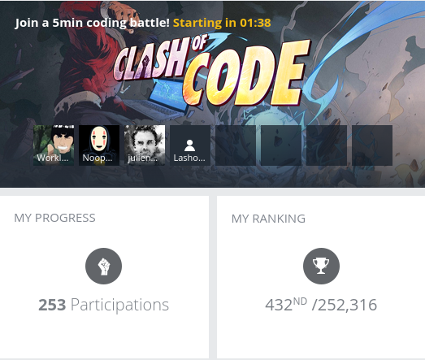

- 1678 words -
See also my Python golf page
I love to play on codingame it's a great way to keep your algorithmic skills sharp while working on playful problems. One of my favorite game on this site is the Clash of Code: a short competition against up to 8 players lasting at most 15 minutes.
There are several types of clashes (fastest to get the right solution, reverse engineering and shortest code) and recently the shortest code became one of my favorite. Since I start to have a decent ranking I compiled some tricks I use in javascript to shorten my code. Some save several bytes and other only save a few but learning how to combine them and when to use them can lead a long way.

A list of the various codingame problems with their stats: chadok.info
When an input is expected to be a number examples usually use the following code:
n = parseInt(readline());This is 10 characters just to parse a number from a string. Using the unary operator + on a string will cast it to a number. Example:
let s = '12';
let n = +s;
typeof n; // 'number'
let t = +s[0] + s[1]; // t=3Note that if you need to add a variable which is a number to a string representing a number you will need to use the string first or add a whitespace before the + operator:
let s = '1';
let n = 1;
n + s; // string: '11'
n + +s; // number: 2
+s + n; // number: 2parseInt('101', 2); // 5
Number('0b101'); // 5
+'0b101'; // 5See this SO answer
let a = 6;
a.toString(2); // '110'
// For negative numbers
let a = -6(a >>> 0).toString(2);'a'.charCodeAt(0); // 97
'A'.charCodeAt(0); // 65'a'.charCodeAt(0) - 97; // 0
'b'.charCodeAt(0) - 97; // 1
'c'.charCodeAt(0) - 97; // 2
'A'.charCodeAt(0) - 65; // 0
'B'.charCodeAt(0) - 65; // 1
'C'.charCodeAt(0) - 65; // 2If not considering the case
parseInt(c, 36) - 10;
// Example
[...'abcdefghijklmnopqrstuvwxyz'].map((c) => parseInt(c, 36) - 10); // [0, 1, 2, 3..., 25];for loops are most of the time the most byte efficient way to write loops.
while(1)
for(;;)for loop first statement 🔗In javascript you can combine some statements with , and this can be used to put a lot of things. Say you need to read two values and then iterate between these two:
// 44 bytes
a=readline()
b=readline()
for(i=a;i<b;i++)
// 37 bytes
for(b=realine(a=readline();a<b;a++)Here is an example of a code I made for a challenge using this kind of declarations:
for (r = readline, n = +r((m = +r((t = 0)) + 1)); m < n; m++) {
for (j = T = 0, S = [...(m + '')], L = S.length; j < L; j++) T += S[j] ** L;
t += T == m;
}
print(t);for (... of ...) 🔗When you need to iterate on a list the for (iterator of list) syntax is much shorter than for (i=0; i<list.length; i++), but also most of the time is beats functions like .forEach or .map because you don't need the arrow function and the iterator is available:
l.map(Number); // Good
l.map((c) => +c); // Better
for (c of l) t += +c; // TopCode golf solutions are often very short and not complex enough to require switching between different scopes. So most of the time you can loose the let, const and others var from your code.
You should always have in mind the implications of not implicit scopes but that saves you a lot of characters.
// 58 bytes
let n = 10;
for (let i = 0; i < n; i++) {
console.log(i);
}
// 37 bytes
n = 10;
for (i = 0; i < n; i++) console.log(i);You've probably tried to do this in a project and had eslint yelling at you for doing that, but in codegolf that saves bytes:
a = b = 1;
a; // 1
b; // 1In math challenges using bitwise operations are often very powerful. This is not something every developer is used to but it's worth knowing them
Math.floor(n);
0 | n;
n | 0;
Math.round(n);
(n + 0.5) | 0;
Math.ceil(n);
n % 1 ? -~n : n;
Math.abs(n);
n < 0 ? -n : n;
Math.min(x, y);
x < y ? x : y;
Math.max(x, y);
y < x ? x : y;Shifting right divides and rounds the result by the power of two
(i / 2) | (0 === i >> 1);
(i / 4) | (0 === i >> 2);0.5 === 0.5; // trueThe ternary operator is precious to avoid lengthy conditional expressions.
Always be mindful of what you use in your conditional expressions, sometimes putting them in another way can save a byte or two while preserving the same feature:
r = a < 10 ? a + '0' : a;
r = a > 9 ? a : a + '0';
r = a == b ? 'same' : a > b ? 'higher' : 'lower';
r = a > b ? 'higher' : a < b ? 'lower' : 'same';&& and || 🔗TODO Find some good examples for this one
Sometimes you need to execute something only if you match a condition and if statements are not always the shortest solutions. Instead you can use && to execute an instruction only when the first one returns true:
if(a%2==1)t+=a
(a%2==1)&&t+=aConsider a problem where you need to find the nth digit in a string of all palindromic numbers concatenated.
You will need to generate the string 123456789112233445566778899101.... One way to do it is the following:
for (n = +readline((s = '')), i = 0; !s[n]; i++)
if ([...(i + '')].reverse().join`` == i) {
s += i;
}
print(s[n]);While the nth digit of the string doesn't exists continue to search for number which are palindromes.
for (n = +readline((s = '')), i = 0; !s[n]; i++) [...(i + '')].reverse().join`` == i && (s += i);
print(s[n]);These tips are only useful on the codingame website.
readline calls 🔗Codingame provides a readline() function to get the inputs of a problem. This function will read one line of standard input and return it as a string without the new line character.
If you need to use readline() more than one it will be cheaper to store it in a variable first:
// 27 bytes
n = readline();
m = readline();
// 24 bytes
r = readline;
n = r();
m = r();This is only 3 characters saved but the more calls to readline() you need to write the more characters you save.
readline arguments 🔗You can use javascript scope smartly to reduce the number of bytes needed to get the inputs. To do so keep in mind that if you pass a variable assignation as the argument of a function the variable is still available in your current scope.
For example let's say you need to read two strings n and m and to init a counter i to zero:
// 28 bytes
r = readline;
n = r();
m = r();
i = 0;This can be shortened like this:
// 26 bytes
r = readline;
m = r((n = r((i = 0))));⚠ The order of calls made to r() is important here: The first call made to the function should be the most nested.
See the MDN doc for tagged templates
Basically if you pass to a function a template literal with some placeholders like this:
myTagFn`str1 ${a} str2 ${b} str3`;The function will get as parameters 1) the resulting array of splitting the template literal on each placeholders and 2) the different placeholders. E.g.:
const myTagFn = (strings, ...args) => {
console.log(strings); // [ 'str1 ', ' str2 ', ' str3' ]
console.log(args); // [ 1, 2 ]
}
const a = 1
const b = 2
myTagFn`str1 ${a} str2 ${b} str3`
It turns out that many methods of the standard library work as tag functions which allows to remove the parenthesis around their arguments. For example:
'ab cd ef'.split(' ');
'ab cd ef'.split` `;[1, 2, 3].join('\r');
[1, 2, 3].join`\r`;console.log by print 🔗To pass your result to codingame validators you need to write it to the standard output. In regular javascript this is done with console.log however codingame's environment supports the deprecated print which works exactly the same:
console.log('valid');
print('valid');In some cases where you need to stop your program immediately it is possible to use an invalid instruction rather than trying to use e.g. process.exit().
This work because codingame validate the standard output of your program but not that it ran without errors. This is a bogus example just to show my point: Imagine you need to iterate through a list looking for the first value matching a condition, knowing that several values will match it. You'll want to avoid printing the next values so you need to stop the program altogether. You could use process.exit() but using Z (assuming that you didn't define the variable) is much shorter:
if (/*condition*/)print(result),process.exit()
if (/*condition*/)print(result),ZPosts in the same category: [codegolf]